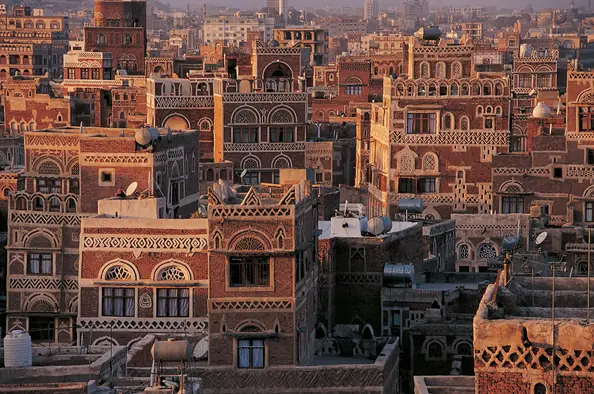
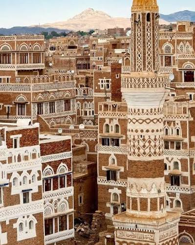
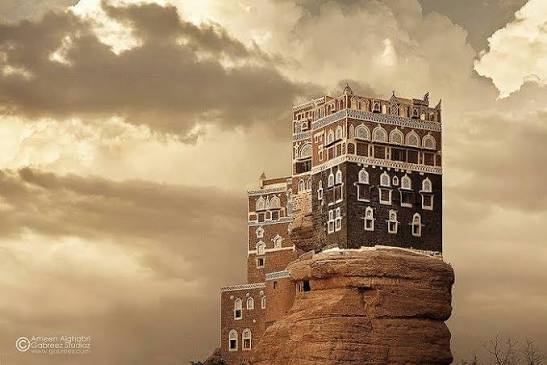
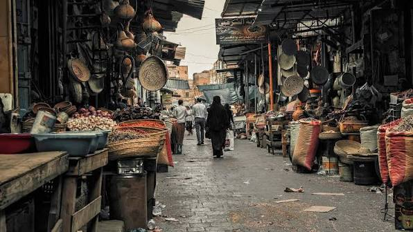
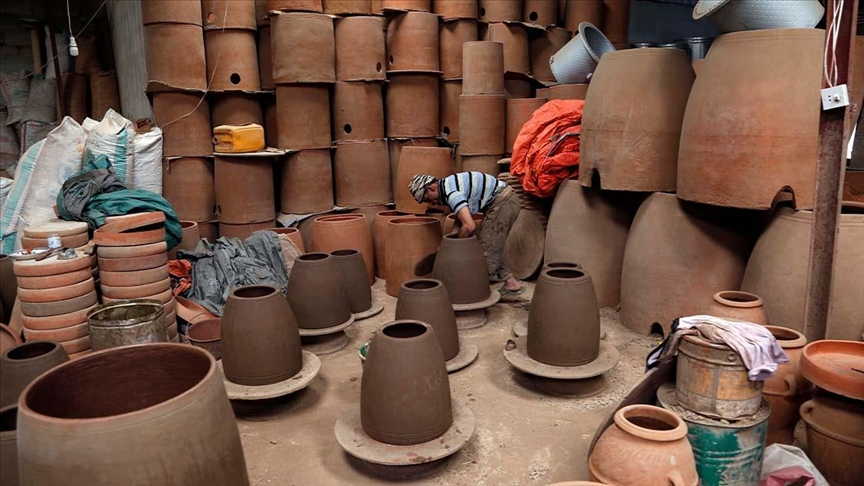

YEMEN EXPLORER
رحلة بين تاريخ اليمن العريق، وعاداته، وفنونه، وحرفه التقليدية، ومطبخه، وتراثه الذي تناقلته الأجيال.
اكتشف الثقافة
ثقافة تمتد جذورها عبر آلاف السنين

تتميز الثقافة اليمنية بتنوعها الكبير نتيجة التاريخ الطويل لليمن وتعدد مناطقه وبيئاته. فقد نشأت في أرضه حضارات قديمة تركت آثاراً مهمة في العمارة واللغة والتجارة والفنون.
ولا تزال كثير من العادات والتقاليد والحرف والأزياء والأطعمة والفنون الشعبية حاضرة في الحياة اليومية، وتشكل جزءاً مهماً من الهوية الثقافية للمجتمع اليمني.
من ممالك جنوب الجزيرة العربية إلى المدن اليمنية التاريخية
تعد سبأ من أشهر الممالك القديمة في اليمن، وارتبط تاريخها بالتجارة والزراعة ونظام الري وبناء المنشآت الهندسية المهمة.
اكتشف المزيد ←اشتهرت حضرموت بالتجارة القديمة، وخاصة تجارة اللبان، وكان لها حضور مهم في تاريخ جنوب الجزيرة العربية.
اكتشف المزيد ←كانت حمير من أبرز الممالك اليمنية القديمة، وامتد نفوذها في أجزاء واسعة من جنوب الجزيرة العربية.
اكتشف المزيد ←عندما يتحول البناء إلى لوحة فنية
تتميز العمارة اليمنية بتنوعها واستخدامها للمواد المحلية مثل الحجر والطين والطوب، مع تصميمات تختلف من منطقة إلى أخرى.
وتشتهر صنعاء القديمة بمبانيها متعددة الطوابق ونوافذها المزينة بالزجاج والجص، بينما تتميز مناطق أخرى بأنماط معمارية مختلفة تتناسب مع البيئة المحلية.

تنوع لغوي يعكس تنوع المجتمع اليمني
العربية هي اللغة الأساسية في الحياة اليومية والتعليم والإعلام، مع تنوع واضح في اللهجات بين المناطق اليمنية.
عرف اليمن القديم لغات جنوب عربية قديمة، من بينها السبئية والمعينية والقتبانية والحضرمية.
تختلف اللهجات من منطقة إلى أخرى، وتظهر بينها خصائص لغوية ومفردات محلية متنوعة.
توجد في بعض مناطق اليمن لغات حديثة من اللغات العربية الجنوبية الحديثة، ومنها المهرية والسقطرية.
مهارات يدوية انتقلت من جيل إلى جيل
تتميز الملابس والحلي اليمنية بتنوعها وزخارفها واختلافها من منطقة إلى أخرى.

تعد الأسواق الشعبية جزءاً مهماً من الحياة الاجتماعية والثقافية والتراثية في اليمن.

تشمل الحرف اليمنية العديد من الصناعات اليدوية التقليدية التي توارثتها الأجيال.
تتميز الأزياء اليمنية بتنوعها حسب المنطقة والمناسبة، وتحمل الكثير من التفاصيل التي تعكس الهوية المحلية.
الأزياء الرجالية ملابس تقليدية متنوعة تختلف بين المناطق.
الأزياء النسائية ألوان وزخارف وحلي تختلف باختلاف المناطق والمناسبات.
الجنبية من أشهر عناصر الزي التقليدي الرجالي في اليمن.
نكهات أصيلة من قلب اليمن
من أنواع الخبز اليمني الشعبي، ويتميز بطبقاته وطريقة تحضيره الخاصة.
من الأطباق اليمنية المعروفة، وتقدم بطرق مختلفة حسب المنطقة والمكونات.
طبق شعبي معروف في اليمن، ويعد من الأكلات المرتبطة بالمطبخ اليمني التقليدي.
يشتهر اليمن بإنتاج أنواع متعددة من العسل، ويعد العسل جزءاً مهماً من التراث الغذائي.
صوت اليمن وإيقاعه وحكاياته
يمتلك اليمن تراثاً غنائياً متنوعاً يرتبط بالمناطق والمناسبات الاجتماعية المختلفة.
تظهر الرقصات الشعبية في الأعراس والمناسبات، وتختلف أشكالها وإيقاعاتها بين المناطق.
يحتل الشعر مكانة مهمة في الثقافة اليمنية، سواء في المناسبات الاجتماعية أو في الحياة اليومية.
قيم اجتماعية تشكل جزءاً من الحياة اليمنية
تعد الضيافة وإكرام الضيف من القيم الاجتماعية المعروفة في المجتمع اليمني.
تمثل المجالس مساحة للقاء والتواصل وتبادل الأحاديث والخبرات.
تتميز المناسبات الاجتماعية بتنوع الأزياء والأغاني والرقصات والأطعمة التقليدية.
تلعب الأسرة والعلاقات الاجتماعية دوراً محورياً في الحياة الثقافية اليمنية.
من المدن القديمة إلى الأسواق، ومن الحرف إلى الأطعمة، يبقى التراث جزءاً حياً من ذاكرة اليمن.